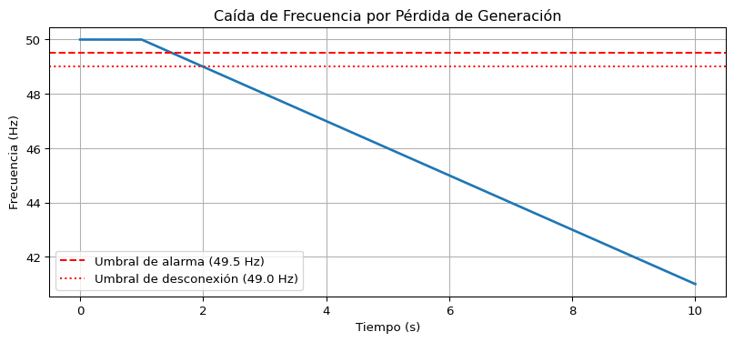

Los apagones (blackouts) son una de las manifestaciones más críticas de la inestabilidad en un sistema eléctrico.
La estabilidad de un sistema de potencia es la capacidad del sistema eléctrico para mantener un funcionamiento en equilibrio (sincronismo, voltaje y frecuencia constantes) bajo condiciones normales y recuperar un estado operativo aceptable tras una perturbación, como fallas, cortocircuitos o variaciones rápidas en la carga. Es fundamental para garantizar un suministro eléctrico continuo y evitar apagones.
3.1.1 Estabilidad de Frecuencia
La estabilidad de frecuencia se refiere a la capacidad de un sistema de potencia para mantener la frecuencia del sistema dentro de límites operativos nominales, tanto en condiciones de operación normal como después de haber sido sometido a una perturbación severa que cause un desequilibrio significativo entre la generación y la demanda (carga). Se basa en el control de potencia activa a través de reguladores de velocidad (gobernadores) y sistemas de inercia para evitar apagones por sobrefrecuencia o baja frecuencia.
La frecuencia del sistema es un indicador global del equilibrio entre la potencia activa generada y la consumida (incluyendo las pérdidas). Una frecuencia constante (por ejemplo, 50 Hz o 60 Hz) indica que el equilibrio se mantiene. Cualquier desviación de la frecuencia nominal es una señal de un desequilibrio entre la potencia mecánica de entrada al sistema y la potencia eléctrica de salida.
Sobre-frecuencia: Ocurre cuando la generación total supera a la demanda total (más las pérdidas). Los generadores aceleran.
Sub-frecuencia: Ocurre cuando la demanda total supera a la generación total. Los generadores desaceleran (se frenan).
Aspectos clave de la estabilidad de frecuencia:
Balance Generación-Carga: La frecuencia depende directamente del equilibrio entre la potencia activa generada y la demandada. Si la carga supera a la generación, la frecuencia disminuye; si la generación supera a la carga, la frecuencia aumenta.
Respuesta Inercial: La inercia del rotor en los generadores síncronos limita la velocidad de cambio inicial de la frecuencia (\(df/dt\)) tras una perturbación.
Regulación Primaria: Los gobernadores ajustan automáticamente las válvulas de las turbinas para cambiar la potencia activa y estabilizar la frecuencia en segundos.
Deslastre de Carga (Load Shedding): Mecanismo de defensa crítico que desconecta cargas automáticamente cuando la frecuencia cae por debajo de umbrales críticos para evitar el colapso del sistema
3.1.1.1 ¿Por qué se frenan los generadores?
Mayor demanda = Mayor resistencia magnética
Cuando la demanda eléctrica supera la producción:
Aumenta la corriente.
Aumenta la corriente en el estator.
Se incrementa el campo magnético opuesto del estator.
Aparece mayor torque resistente (opuesto al rotor).
El rotor se desacelera.
Es equivalente a pedalear cuesta arriba (más resistencia → más esfuerzo necesario.)
⚠ Nota: Esto aplica principalmente a generadores síncronos.
Muchos aerogeneradores modernos utilizan electrónica de potencia y no reaccionan igual ante perturbaciones.
Caída de frecuencia
La frecuencia eléctrica está directamente relacionada con la velocidad de giro:
\[ f = \frac{p \cdot n}{120}\]
Donde:
( f ) = frecuencia
( p ) = número de polos
( n ) = velocidad en RPM
Si baja la velocidad → baja la frecuencia.
3.1.1.2 La Frecuencia como Indicador del Equilibrio de Potencia Activa
La relación fundamental que gobierna la dinámica de la frecuencia se deriva de la ecuación de oscilación de una máquina síncrona, aplicada a todo el sistema.
Considerando un sistema equivalente con una inercia total \(H_{sist}\), la ecuación que describe la evolución de la frecuencia \(f\) (en pu) es:
\(H_{sist}\) es la constante de inercia del sistema (en segundos, referida a la potencia base del sistema).
\(f\) es la frecuencia del sistema (en por unidad o Hz).
\(P_m\) es la potencia mecánica total de entrada de los generadores (pu).
\(P_e\) es la potencia eléctrica total de salida de los generadores (pu), que es igual a la demanda más las pérdidas.
\(\Delta P\) es el desequilibrio de potencia activa.
Interpretación:
Si \(\Delta P > 0\) (exceso de generación), la derivada \(df/dt > 0\), la frecuencia aumenta.
Si \(\Delta P < 0\) (déficit de generación), la derivada \(df/dt < 0\), la frecuencia disminuye.
La velocidad de cambio de la frecuencia (RoCoF - Rate of Change of Frequency) es inversamente proporcional a la inercia total del sistema. Un sistema con poca inercia (como aquellos con alta penetración de fuentes renovables basadas en electrónica de potencia) experimentará cambios de frecuencia mucho más rápidos y pronunciados ante un mismo desequilibrio.
3.1.1.3 Dinámica de la Frecuencia ante un Desequilibrio
Ante un evento que cause un déficit de generación (por ejemplo, la pérdida de una unidad generadora o de una interconexión), la frecuencia del sistema experimenta una dinámica característica que puede dividirse en varias etapas:
Fase Inercial (0-2 segundos):
Inmediatamente después del evento, la energía cinética almacenada en las masas rotatorias de los generadores síncronos (y motores) es liberada para compensar el déficit inicial. Esta es la respuesta inercial.
La frecuencia comienza a caer a una velocidad inicial (RoCoF) determinada por la inercia del sistema y la magnitud del desequilibrio \(\Delta P\). En este punto, los reguladores de velocidad aún no han actuado significativamente.
Respuesta Primaria (2-30 segundos):
Los reguladores de velocidad (gobernadores) de los generadores detectan la caída de velocidad/frecuencia y aumentan la admisión de vapor, agua o combustible para incrementar la potencia mecánica.
Esta acción estabiliza la frecuencia en un valor de régimen permanente, pero por debajo de la frecuencia nominal (generalmente dentro de una banda regulada). Este nuevo valor de frecuencia se conoce como frecuencia de asentamiento primario. Si la frecuencia cae por debajo de ciertos umbrales, se pueden activar esquemas de alivio de carga por baja frecuencia (LFSM-O o UFLS) para evitar un colapso total.
Respuesta Secundaria (30 segundos - 15 minutos):
Una vez que la frecuencia se ha estabilizado (aunque sea a un valor por debajo del nominal), entra en acción el control secundario (o Control Automático de Generación - AGC).
El AGC envía señales a los generadores seleccionados para modificar sus puntos de consigna, con el objetivo de:
Restaurar la frecuencia a su valor nominal (50 o 60 Hz).
Restablecer los intercambios de potencia programados con áreas vecinas al valor deseado.
Respuesta Terciaria (> 15 minutos):
Consiste en acciones manuales o automáticas para reemplazar las reservas primarias y secundarias utilizadas, reconfigurar la red y preparar el sistema para una futura contingencia. Incluye el arranque de unidades adicionales, cambios en la programación de la generación, etc.
Un desequilibrio significativo sin una respuesta rápida puede llevar a la desconexión de generadores, inestabilidad de voltaje y, finalmente, un apagón (https://www.youtube.com/watch?v=52KpNIXK2bg&t=78s)
3.1.1.4 Modelamiento (Relación Potencia Activa y Frecuencia)
Usaremos un sistema mínimo conocido como Modelo agregado (single-machine infinite bus simplificado - Sistema de Una Máquina contra Bus Infinito):
1 generador síncrono
1 barra de carga
1 línea equivalente
La frecuencia (\(f\)) depende del balance entre la generación y la carga. Si la carga aumenta y la generación no, los generadores se frenan físicamente.
Si \(P_{gen} = P_{load}\) o de otra manera \(P_{mec} = P_{elec}\) –> frecuencia estable
Si \(P_{gen} < P_{load}\) o de otra manera \(P_{mec} = P_{elec}\) –> frecuencia cae
Si \(P_{gen} > P_{load}\) o de otra manera \(P_{mec} = P_{elec}\) –> frecuencia sube
Donde \(H\) es la constante de inercia, \(\omega_s\) es la velocidad sincrona, \(\delta\) es el ángulo del rotor.
En términos de frecuencia (\(f = \frac{d \delta}{dt}\))
\[P_{gen} - P_{load} = M \frac{df}{dt}\]
Usando python:
import numpy as npfrom scipy.integrate import odeintimport matplotlib.pyplot as plt# Parámetros del sistema (valores por unidad)H =5.0# Constante de inercia (segundos)f_nominal =50.0# HzP_m =1.0# Potencia mecánica (esperada)P_e_inicial =1.0# Potencia eléctrica inicial (equilibrio)# Simulación de una perturbación: pérdida del 20% de generación en t=1sdef frecuencia_perturbada(y, t, H, f_nom): delta_w = y[0] # Desviación de velocidad en p.u.# Perturbación: La generación cae, por lo que P_m < P_eif t <1.0: P_m_efectiva =1.0else: P_m_efectiva =0.8# La generación cae a 0.8 p.u.# Asumimos que la carga (P_e) no cambia instantáneamente P_e =1.0# Ecuación de swing simplificada para velocidad# d(delta_w)/dt = (P_m - P_e) / (2H) (en p.u. de torque) ddelta_w_dt = (P_m_efectiva - P_e) / (2*H)return [ddelta_w_dt]# Condición inicial: frecuencia nominal (delta_w = 0)y0 = [0.0]t = np.linspace(0, 10, 1000)# Resolversol = odeint(frecuencia_perturbada, y0, t, args=(H, f_nominal))desviacion_vel = sol[:, 0]frecuencia_hz = f_nominal * (1+ desviacion_vel)# Graficarplt.figure(figsize=(10, 4))plt.plot(t, frecuencia_hz, linewidth=2)plt.axhline(y=49.5, color='r', linestyle='--', label='Umbral de alarma (49.5 Hz)')plt.axhline(y=49.0, color='r', linestyle=':', label='Umbral de desconexión (49.0 Hz)')plt.xlabel('Tiempo (s)')plt.ylabel('Frecuencia (Hz)')plt.title('Caída de Frecuencia por Pérdida de Generación')plt.legend()plt.grid(True)plt.show()

3.1.2 Estabilidad de Tensión
Esta frase resume el principio fundamental de la regulación de tensión en redes eléctricas de corriente alterna:
La potencia reactiva (Q) no realiza trabajo útil (como mover un motor o encender una luz), pero es esencial para mantener el nivel de tensión (V) necesario para transportar la potencia activa (P).
En sistemas eléctricos:
Potencia activa (P) → realiza trabajo útil.
Potencia reactiva (Q) → sostiene los campos eléctricos y magnéticos necesarios para que el sistema funcione.
Tensión (V) → depende fuertemente del balance local de potencia reactiva.
La estabilidad de voltaje (o estabilidad de tensión) se define como la capacidad de un sistema de potencia para mantener voltajes aceptables y estables en todos los nodos de la red, tanto en condiciones normales de operación como después de haber sido sometido a una perturbación.
A diferencia de la estabilidad de frecuencia, que es un fenómeno global del sistema, la estabilidad de voltaje es un fenómeno predominantemente local o regional, aunque sus consecuencias pueden extenderse y provocar un colapso generalizado.
Un sistema es estable en voltaje si, ante un aumento de la demanda de potencia reactiva en un nodo, los mecanismos de control del sistema (como los reguladores automáticos de tensión) son capaces de restaurar un equilibrio entre la generación y el consumo de potencia reactiva. La inestabilidad de voltaje se manifiesta como una caída progresiva e incontrolada de la tensión en uno o más nodos de la red, pudiendo llevar a un colapso de voltaje.
El voltaje (o tensión) está relacionado con el equilibrio de potencia reactiva en un punto específico de la red.
La Física: La potencia reactiva es necesaria para mantener los campos magnéticos en motores y transformadores. Si no se inyecta suficiente potencia reactiva en una zona, el voltaje cae. Es decir, si la potencia reactiva Q en un nodo específico es menor que la demanda de potencia reactiva en ese nodo, entonces el voltaje de ese nodo caerá.
El Problema: La caída de voltaje hace que los motores de inducción (como los de aire acondicionado) consuman más corriente para mantener su par, lo que aumenta la demanda de potencia reactiva, lo que hace bajar más el voltaje. Este círculo vicioso puede llevar a un colapso de voltaje .
Ejemplo típico: Un aumento súbito de carga en una zona débil de la red, o la pérdida de una línea de transmisión que limitaba la transferencia de potencia reactiva.
3.1.2.1 Naturaleza del Problema: La Potencia Reactiva
La estabilidad de voltaje está intrínsecamente ligada al flujo de potencia reactiva (Q) . Mientras que la frecuencia está asociada al equilibrio de potencia activa (P), el perfil de voltaje en un nodo está determinado por el balance local de potencia reactiva.
Conceptos clave: - La potencia reactiva no puede transmitirse a largas distancias de manera eficiente, ya que provoca caídas de tensión significativas y aumenta las pérdidas. Por ello, debe generarse (o compensarse) cerca de los centros de consumo. - Los elementos del sistema (líneas de transmisión, transformadores, cargas) consumen o generan potencia reactiva. Las líneas, por ejemplo, generan reactiva en derivación (efecto capacitivo a baja carga) y la consumen en serie (efecto inductivo a alta carga). - La relación entre el voltaje (V), la potencia reactiva (Q) y la reactancia de la red (X) en un sistema simplificado se puede aproximar como:
\[ \Delta V \approx \frac{X \cdot Q}{V} \]
Q controla V.
La potencia reactiva determina el nivel de tensión en los nudos (buses).
Esto significa que para mantener el voltaje dentro de límites, es necesario inyectar potencia reactiva en los nodos donde se consume (cargas inductivas) y absorberla donde se genera en exceso (líneas poco cargadas).
Si la tensión sube → Hay exceso de reactiva (Sobrevoltaje)
Qué significa:
La tensión en la red es mayor que su valor nominal (por ejemplo, por encima de 230 V / 400 V en baja tensión).
Por qué ocurre:
Baja demanda de potencia activa (por ejemplo, de noche).
Líneas largas con comportamiento capacitivo.
Bancos de condensadores conectados.
Exceso de generación distribuida.
Estos elementos inyectan potencia reactiva capacitiva al sistema.
Efecto:
Incremento del voltaje.
Riesgo de sobrecalentamiento de equipos.
Deterioro del aislamiento.
Desconexión automática de instalaciones.
¿Qué se debe hacer para bajar la tensión (exceso de reactiva)?:
Reducir generación de reactiva.
Desconectar bancos de condensadores.
Conectar reactancias inductivas.
Ajustar consignas de tensión en generadores.
Si la tensión baja → Hay déficit de reactiva (Subvoltaje)
Qué significa:
La tensión en la red es menor que el valor nominal.
Por qué ocurre:
Motores eléctricos.
Transformadores.
Bobinas e inductancias.
Estos equipos consumen potencia reactiva inductiva. Si el sistema no puede suministrarla, aparece un déficit.
Efecto:
Caídas de tensión.
Pérdida de rendimiento en motores.
Riesgo de colapso de tensión.
Posibles apagones en casos extremos.
¿Qué se debe hacer Para subir la tensión (déficit de reactiva)?:
Conectar bancos de condensadores.
Utilizar compensadores síncronos.
Aumentar inyección de reactiva desde generadores.
Resumen de la relación V–Q
Tensión (V)
Potencia Reactiva (Q)
Causa / Efecto
↑ Sube
Exceso / Sobra
Sobretensión: exceso de reactiva (capacitiva)
↓ Baja
Déficit / Falta
Subtensión: falta de reactiva (inductiva)
3.1.2.2 Curva PV (Potencia-Voltaje) y Nariz de la Curva
La herramienta conceptual más importante para entender la estabilidad de voltaje es la curva PV (o curva de nariz). Esta curva representa la relación entre el voltaje en un nodo de carga y la potencia activa (P) que se entrega a través de una línea o sistema de transmisión.
3.1.2.3 Importancia de la compensación de reactiva
La potencia reactiva debe ser compensada para:
Evitar pérdidas innecesarias.
Reducir penalizaciones económicas.
Mantener perfiles de tensión adecuados.
Garantizar la estabilidad del sistema eléctrico.
3.1.2.4 Blackout: Cómo colapsa un sistema eléctrico
Un blackout o apagón generalizado no ocurre por una única causa, sino por un colapso en cadena resultado de:
Desequilibrio entre generación y demanda.
Pérdida de estabilidad de tensión.
Pérdida de estabilidad de frecuencia.
Interdependencia entre tensión y frecuencia
El blackout ocurre cuando ambas inestabilidades se retroalimentan, aquí algunos casos:
Alta carga / baja generación
Falta reactiva → caída de tensión.
Baja tensión → dificultad para suministrar potencia activa.
Baja potencia activa → caída de frecuencia.
Alta penetración renovable
Menor inercia síncrona.
Mayor sensibilidad ante perturbaciones.
Desconexiones rápidas ante desviaciones de frecuencia.
Fallos de protección o control
Sobretensiones o subtensiones.
Fluctuaciones extremas de frecuencia.
Desconexión masiva automática.
Resumen conceptual del blackout
Un blackout es el resultado de:
Pérdida de control de potencia reactiva → colapso de tensión.
Desequilibrio de potencia activa → colapso de frecuencia.
Desconexión progresiva de líneas y generadores.
Falta de capacidad de respuesta en tiempo real.
3.2 Procedimiento de Operación 1.3
Sobre el Procedimiento de Operación 1.3 de REE (P.O. 1.3): Tensiones admisibles en los nudos de la red de transporte
3.2.1 Objetivo y ámbito de aplicación
El objetivo fundamental del P.O. 1.3 es establecer los criterios y valores de tensión que deben cumplirse en condiciones normales y anormales de explotación en la red de transporte, para:
Asegurar la calidad de onda (tensión dentro de márgenes) en el punto de conexión de los usuarios (generadores y consumidores).
Garantizar la estabilidad del sistema (evitar colapsos de tensión).
Proteger los equipos de los usuarios y de la propia red contra sobretensiones o subtensiones.
Ámbito de aplicación: Afecta a todos los nudos de la red de transporte (tensión nominal ≥ 220 kV, incluyendo 400 kV, 220 kV y, en algunos casos, redes de 132 kV con función de transporte) y a las instalaciones de los usuarios conectados a dicha red (generadores, consumidores directos, distribuidores).
3.2.2 Definiciones clave
Para interpretar correctamente los valores, el P.O. 1.3 define los siguientes conceptos:
Tensión nominal (\(U_n\)): Valor eficaz de la tensión fase-fase con que se designa una red o instalación (ej: 400 kV, 220 kV).
Tensión más elevada de la red (\(U_m\)): Valor máximo de la tensión fase-fase para el que está diseñado el equipo. (\(U_m > U_n\) para dar margen).
Tensión de funcionamiento (\(U_f\)): Valor eficaz de la tensión fase-fase en un instante dado. Es la variable que se controla.
Perturbación: Incidente que provoca una desviación significativa de la tensión (ej: cortocircuito, pérdida de generación, desconexión de línea).
3.2.3 Valores de tensión admisible
El procedimiento distingue entre régimen permanente (operación normal) y régimen transitorio (post-perturbación). Los valores se expresan en tanto por uno (p.u.) respecto a la tensión nominal (\(U_n\)).
3.2.3.1 En régimen permanente (operación normal)
Son los límites que deben cumplirse en todo momento, salvo durante un tiempo muy limitado tras una incidencia.
Nivel de Tensión (\(U_n\))
Límite Inferior (\(U_{min}\))
Límite Superior (\(U_{max}\))
Observaciones
400 kV
0,95 p.u. (380 kV)
1,05 p.u. (420 kV)
Margen simétrico. La tensión más elevada de la red (\(U_m\)) es 420 kV, por lo que 1,05 p.u. es el límite físico del aislamiento.
220 kV
0,95 p.u. (209 kV)
1,05 p.u. (231 kV)
Idem.
132 kV (y redes inferiores con función de transporte)
0,95 p.u.
1,05 p.u.
Salvo que existan acuerdos específicos con los titulares.
Nota: En operación normal, el Operador del Sistema (REE) intenta mantener la tensión lo más cerca posible de 1,0 p.u. (valores centrales), dejando los extremos como margen de seguridad.
3.2.3.2 En situaciones post-perturbación o anormales
Tras una falta, se permiten desviaciones mayores durante un tiempo limitado, hasta que los sistemas de control restablecen los valores normales.
Concepto
Valor
Tiempo Máximo Permitido
Sobretensión temporal máxima
1,10 p.u.
< 1 hora (hasta que el operador pueda actuar).
Subtensión temporal máxima
0,90 p.u.
< 1 hora (en función de la seguridad del sistema y riesgo de colapso).
Excepción importante: En redes de 400 kV, durante maniobras o tras la pérdida de una línea muy cargada, pueden aceptarse sobretensiones de hasta 1,20 p.u. durante unos segundos o minutos (tiempo de actuación de los sistemas de control de tensión como los reguladores en vacío de los transformadores - OLTC).
3.2.4 Responsabilidades y actuaciones
3.2.4.1 Del Operador del Sistema (REE)
Planificar la operación: Realizar estudios de flujos de cargas para prever que las tensiones se mantendrán en los rangos admisibles.
Operar en tiempo real: Modificar la consigna de tensión de los generadores (a través del control de tensión), conectar/reactivar bancos de condensadores/reactancias, o cambiar la configuración de la red para mantener la tensión dentro de los límites del Artículo 3.1.
Gestionar la potencia reactiva: La tensión está intrínsecamente ligada al balance de energía reactiva. Si la tensión sube, hay exceso de reactiva; si baja, hay déficit.
Coordinar con los titulares de red: Informar de las necesidades de consignas de tensión.
3.2.4.2 De los titulares de red (generadores, consumidores, distribuidores)
Mantener la tensión en el punto de conexión dentro de los límites del P.O. 1.3, siempre que sea técnicamente posible y sin perjuicio de su seguridad.
Disponer de equipos de regulación de tensión (ej: AVR en generadores, cambiadores de tomas en transformadores) y ponerlos a disposición del sistema.
Comunicar incidencias: Si su instalación no puede mantener la tensión dentro de los márgenes, deben comunicarlo a REE.
3.2.5 Interacción con otros procedimientos de operación
El P.O. 1.3 no actúa solo. Para un experto en mercados, es vital entender su interconexión:
P.O. 7.2 (Control de Tensión de la Red de Transporte): Desarrolla cómo se controla la tensión (mediante la consigna de los generadores, el mantenimiento de la reserva de reactiva, etc.). Mientras el P.O. 1.3 dice cuánto es admisible, el P.O. 7.2 dice cómo se consigue.
P.O. 3.1 (Programación de la Generación): La necesidad de mantener la tensión puede forzar a ciertas unidades a estar acopladas (generando o consumiendo reactiva) aunque no sean económicas en el mercado diario. Esto genera restricciones técnicas por tensión (servicios complementarios).
P.O. 9.0 (Servicios de Balance): La regulación de tensión (potencia reactiva) es un servicio de balance no frecuencial. Los generadores son remunerados por ello.
3.2.6 Aplicación práctica para un “energy quant”
¿Cómo impacta esto en la optimización de activos y en el mercado?
3.2.6.1 En generación renovable (solar/eólica)
Obligación de hueco de tensión (FRT): Aunque no está en este procedimiento (está en P.O. 12.2 y P.O. 12.3), el P.O. 1.3 define los límites. Si una planta no puede soportar una bajada de tensión a 0,9 p.u. durante 1 hora (o a 0,0 durante unos instantes), debe desconectarse. Un quant debe modelar el riesgo de curtailment por tensión.
Potencia reactiva: Los inversores modernos pueden generar/consumir reactiva. Un quant puede optimizar la consigna de reactiva no solo para cumplir el P.O. 1.3, sino para maximizar la vida útil del inversor o incluso ofrecer servicios de control de tensión (si se abren mercados de reactiva).
3.2.6.2 En baterías (BESS)
Soporte a la red: Las baterías, por su velocidad, son ideales para inyectar o absorber reactiva casi instantáneamente y ayudar a mantener la tensión dentro de los rangos del P.O. 1.3 (especialmente en redes con mucha solar, donde la tensión tiende a subir al mediodía).
Nuevo flujo de ingresos: En el futuro, el control de tensión podría ser un servicio remunerado. Un quant que entienda los límites del P.O. 1.3 puede valorar esa opción.
3.2.6.3 En ciclos combinados (gas)
Deben mantener su tensión en bornes dentro de los límites. Si la red está muy cargada (baja tensión), deberán generar más reactiva, lo que puede limitar su capacidad de generar activa (potencia aparente constante). Esto afecta a su oferta en el mercado.
3.2.7 Ejemplo numérico de aplicación
Escenario: Una planta solar conectada a un nudo de 220 kV. A mediodía, con alta generación y poca demanda local, la tensión en el nudo sube a 1,06 p.u. (233,2 kV).
Diagnóstico: Se supera el límite superior de 1,05 p.u. en régimen permanente (Art. 3.1).
Actuación de REE: Ordenará a la planta solar reducir su generación de reactiva (si está inyectando) o incluso a consumir reactiva. Si no es suficiente, podría ordenar la desconexión de alguna línea o la reducción de potencia activa (curtailment por tensión) para aliviar el efecto Ferranti en la línea.
Actuación del generador: Deberá ajustar su modo de control de tensión (pasar de control de cos phi constante a control de tensión constante) para absorber el exceso de reactiva y bajar la tensión a 1,05 p.u.
3.2.8 Conclusión
El P.O. 1.3 es, aparentemente, una simple tabla de números, pero es la restricción física más inmediata que condiciona la operación del sistema. Para un Energy Quant, este procedimiento no es un documento legal lejano, sino una restricción de desigualdad (inequality constraint) en su modelo de optimización.
Por ejemplo, si tu modelo de PPA ignora que el comprador puede tener que parar su fábrica porque REE le exige consumir reactiva para bajar la tensión, tu valoración del riesgo será incorrecta.
Dominar el P.O. 1.3 es dominar la primera capa de realidad física que subyace a los precios del mercado eléctrico.